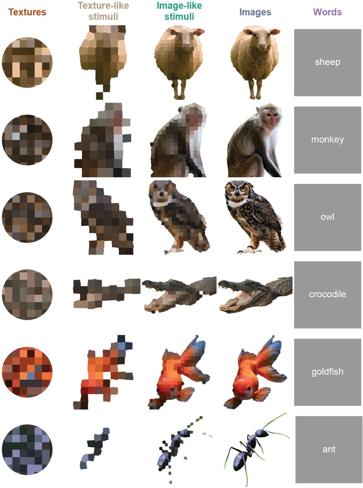

File formats, data structures, and other key elements
Detailed choice file
A detailed choice file is a .mat file that contains a set of similarity comparisons, typically collected in a psychophysical experiment. Each line of the file corresponds to a single judgment.
It contains three variables: 'stim_list', 'responses', and 'responses_colnames'. 'stim_list' is a character array in which each row is a unique stimulus label.
File names should contain the string '_detailed_choices_', preceded by a designation of the domain or paradigm, and followed by an identifier for the subject or data source.
-
triadic comparisons
- Column 1 of 'responses' is the 1-based trial number
- Columns 2-4 of 'responses' are the 1-based indices into stim_list of the reference stimulus and two comparison stimuli (s1 and s2).
- Column 5 of 'responses' is 1 if s1 is judged more dis-similar to the reference than s2, and 0 otherwise
- 'responses_colnames' are text strings that label these columns
See rs_py/samples/choice_files/*_detailed_choices_S*.mat for examples.
Choice file
A choice file (also called a combined choice file) is a .mat file that contains a set of similarity comparisons, typically collected in a psychophysical experiment. In contrast to a detailed choice file, judgments from repeated presentations of the same stimuli are combined. The file contains three variables: 'stim_list', 'responses', and 'responses_colnames'. 'stim_list' is a character array in which each row is a unique stimulus label.
File names should contain the string '_choices_', preceded by a designation of the domain or paradigm, and followed by an identifier for the subject or data source.
Two options are available for 'responses' and 'responses_colnames':
-
triadic comparisons
- Columns 1-3 of 'responses' are the 1-based indices into stim_list of the reference stimulus and two comparison stimuli (s1 and s2).
- Column 4 of 'responses' is the number of times that s1 is judged more dis-similar to the reference than s2
- Column 5 of 'responses' is the number of times the triad is presented
- 'responses_colnames' are text strings that label these columns
-
tetradic comparisons
- Columns 1-4 of 'responses' are the 1-based indices into stim_list for the stimuli s1, s2, s3, and s4 in the comparison
- Column 5 of 'responses' is the number of times that s1 and s2 are judged more dis-similar than s3 and s4
- Column 6 of 'responses' is the number of times the tetrad is presented
- 'responses_colnames' are text strings that label these columns
See samples/animals/image_choices_S*.mat or samples/bwtextures/bgca3pt_choices_*_sess01_10.mat for examples of triadic comparisons, and see samples/bwtextures/bgca3pt_choices_*-gp_sess01_20.mat for examples of tetradic comparisons.
Coordinate file
A coordinate file is a .mat file that contains sets of coordinates for the elements of a representational space. It contains a variable 'stim_labels', a character array in which each row is a unique stimulus label. This corresponds to the stim\_list variable in a choice file, but the stimuli need not be listed in the same order. A coordinate file also contains one or more variables with names such as 'dim1', 'dim2', ..., 'dim10'. 'dim[k]' specifies the k-dimensional representational space: each row corresponds to a stimulus in stim\_labels; the k columns are the k coordinate values.
File names should contain the string '_coords_', preceded by a designation of the domain or paradigm, and followed by an identifier for the subject or data source.
Optional variables (produced by the modeling of choice data by this package but not required) are:
- rawLLs: log(2) likelihood of the observed responses for each of k-dimensional models, uncorrected for overfitting
- bestModelLL: log(2) likelihood of the observed responses, given a model that exactly matches the observed choice probabilities but is geometrically unconstrained
- debiasedRelativeLL: relative log(2) likelihood, compared to bestModelLL, after correction for overfitting: debiasedRelativeLL = (rawLLs + biasEstimate) - bestModelLL
- biasEstimate: overfitting bias estimate
- metadata: summary of the above description
See samples/animals/image_coords_S*.mat for examples that contain these optional variables, and samples/bwtextures/bgca3pt_cooords_*_sess01_10.mat for examples that do not.
Dataset structure
A dataset structure is a container for representational spaces to be analyzed in parallel -- for example, determining a consensus between them via rs_knit_coordsets, visualizing them via rs_disp_coordsets, or transforming them via rs_xform_apply.
It consists of three components: a coordinate structure ('ds'), a stimulus metadata structure ('sas'), and a set metadata structure ('sets'), each of which is a MATLAB cell array with the same number of records. A single record contains the coordinates and metadata for a representational space models of one or more dimensions, all derived from a common dataset.
Typically a dataset structure is created by reading one or more coordinate files via rs_get_coordsets, a single coordinate file via rs_read_coorddata, or imported from coordinate arrays with user-supplied metadata via rs_import_coordsets.
-
Coordinate structure
- For each record, 'ds{irec}', is a cell array in which 'd{irec}{k}' contains the coordinates for the k-dimensional model, as contained in the
coordinate file. d{irec}{k} may be empty ('[]') if no model is available.
- For each record, 'ds{irec}', is a cell array in which 'd{irec}{k}' contains the coordinates for the k-dimensional model, as contained in the
-
Stimulus metadata structure
-
This contains the metadata that defines the stimulus set, and, optionally, data related to the analysis of 'choice files'. For each record, 'sas{irec}' has the following fields:
- nstims: number of stimuli
- typenames: a 1-D cell array of stimulus labels. Entries will match 'stim_labels' in the
coordinate filethat was used to create thedataset structure. This field is used to identify unique stimuli when merging datasets and records. - type_coords: a 2-D array of
stimulus coordinates, if the domain has a priori coordinates; typically empty if not. Seestimulus coordinatesfor further details. - the optional variables *LL* and metadata from a
coordinate file
-
-
Set metadata structure
-
This contains dataset origin. For each record, 'sets{irec}' has the following fields:
- dim_list: list of available dimensions in ds{irec}
- nstims: number of stimuli
- label_long: long file name, typically full file name and path
- label: shortened file name, suitable for display
- paradigm_name: a designator such as 'cars' or 'animals'
- paradigm_type: overall paradigm category; may be the same as paradigm_name
- subj_ID: unique subject identifier
- subj_ID_short: short form of subject identifier, suitable for display
- pipeline: structure describing the processing stages leading to this record
-
For an example of a dataset structure with one record and without stimulus coordinates, run the demo rs_read_coorddata_demo_cars and look at 'data_out'.
For an example of a dataset structure with three records and with stimulus coordinates, run the demo rs_read_coorddata_demo_opposites and look at 'data_out'.
Stimulus coordinates
For some domains, there may be an a priori set of coordinates for the stimuli -- for example, colors can be given coordinates according to their R, G, and B components. Another example are adjectives, many of which come in opposite pairs. Specifying stimulus coordinates is optional, and for many domains -- for example, cars, or musical instruments -- it may not be appropriate. Stimulus coordinates are a numerical array, in which the rows correspond to the stimuli (in the order of 'typenames'), and each column is a dimension.
- For generic domains, these coordinates constitute the
type_coordsfield of thestimulus metadata structure, and can be specified as auxiliary inputs inrs_get_coordsets,rs_read_coorddata, orrs_import_coordsets. - For
binary texturedata, these values are specified in thesetup metadataand are in thebtc_specoordsandbtc_augcoordsfields of thestimulus metadata structure.
Stimulus coordinates are used in several ways:
- As a framework for visualization of representational spaces (via
rs_disp_enh_coordsets, runrs_read_coorddata_demo_opposites, thenrs_disp_coordsets_demo_opposites) - To create models for representational spaces (via
rs_read_coordsets, runrs_read_coorddata_demo_opposites, option 3, for an example)
Ray structure
A ray structure identifies simple relationships among the stimulus coordinates:
- stimuli that lie on rays (points on approximate straight lines from the origin)
- stimuli that lie on rings (ponits in a plane at approximate equal distances from the origin)
- nearest neighbors
It is created by 'rs_findrays' from the stimulus coordinates. The ray structure is used for visualizations in rs_disp_enh_coordsets.
Auxiliary inputs of rs_findrays set the minimum number of points needed to form a ray, the tolerances for collinearity, etc.
Transformation structure
Transformation structures specify geometric transformations, including linear transformations and several generalizations. These are constructed by rs_xform_specify, rs_geofit, and rs_knit_coordsets, and can be applied to dataset structures by rs_xform_apply.
For transformations on a representational space of dimension k, a transformation structure has the following fields:
- class: one of the following: 'affine' (default if omitted), 'procrustes', 'projective','pwaffine','pwprojective','mean'
- b: a scalar multiplier
- T: a square array of size [k k] or (for 'pwaffine' and 'pwprojective', a stack of such arrays, see below)
- c: a vector of size [1 k] or (for 'pwaffine' and 'pwprojective', a stack of such vectors, see below)
-
additional arguments, depending on 'class'
- For class='projective' (a projective transformation): p is a vector of size [k 1]
- For class='pwaffine' (a piecewise affine transformation with ncuts cuts): c is [ncuts k], T is a 3D array of size [k k 2ncuts], acut is [ncuts 1], and vcut is [ncuts k]
- For class='pwprojective' (a piecewise projective transformation with ncuts cuts): the parameters in 'projective' and 'pwaffine'
To allow for compatibility with transformations produced by procrustes (a MATLAB built-in), or procrustes_consensus, the following alternative names are allowed: b -> scaling, T -> orthog, c -> translation
The transformation applied to a row vector x produces a row vector y as follows:
- 'affine','procrustes','mean': y=b*xT+c (Note, for 'procrustes', abs(det(T)) should equal 1, and for 'mean', T should equal 0.)
- 'projective': This is a projective (or perspective) transformation. An array Taug of size [k+1 k+1] is formed with b*T in its upper left, p in its upper right, c in its lower left, and 1 in its lower right. xaug is created by adjoining a 1 to the right of x. Then yaug=xaug*Taug is computed, and y is the first k elements of yaug divided by its last. For p=0, this reduces to an affine transformation.
-
'pwaffine': This is a piecewise affine transformation. There are ncuts hyperplanes, each defined by their normal vectors given in vcut. To determine the component of the space that x lies in, s=sign(x*vcutT-acut) is computed. The affine transformation used ('ipw') is determined by the entries in s: s=[+1 +1 ... +1] corresponds to ipw=1, [-1 +1 ... +1] corresponds to ipw=2, [+1 -1 ... +1] corresponds to ipw=3,..., and [-1 -1 ... -1] corresponds to ipw=2ncuts. Then T(:,:,ipw) and c(ipw,:) are used to compute the transformation, as in 'affine' above. Notes:
- The same value of b is used for all components.
- For transformations created by
rs_geofit, the pieces of the transformation are continuous where they meet at their boundaries. This is not checked.
-
'pwprojective': The component is determined as in 'pwaffine', and the transformation is carried out as in 'projective'
Note that the same transformation can be expressed in many ways -- for example, the scale factor b can be absorbed into T. The labeling of the pieces of an affine transformation can be permuted.
Domains
-
Binary texture domain
Very rough:
Briefly introduce the textuers and the coordinates Provide pointers to literature
-
Animal domain
Briefly introduce the animal domain Provide pointers to J Neurosci

-
MPI faces domain
Very rough:
Introduce the coordinates
%Ebner, N. C., Riediger, M., \& Lindenberger, U. (2010). FACES—A database of facial expressions in young, middle-aged, and older women and men: % Development and validation. Behavior Research Methods, 42, 351-362. doi:10.3758/BRM.42.1.351.
...
Setup metadata
for Binary texture domain or if configured